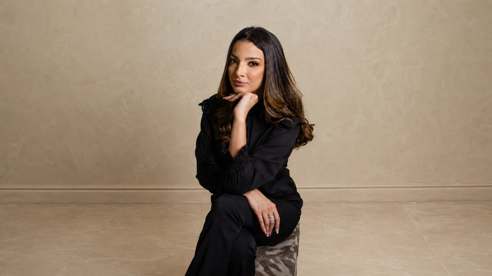

Volume e volumização estratégica
Bumbum de Bilhões®
Preenchimento avançado de imperfeições e estímulo de colágeno para um glúteo arredondado, firme e empinado.
Após uma gestação, um processo de emagrecimento ou simplesmente pelas mudanças naturais do corpo, é comum perceber perda de volume nos glúteos, flacidez e alterações no formato dos seios. Descubra os protocolos exclusivos de Harmonização Corporal da Dra. Surya Braga: técnica, personalização e naturalidade para devolver contorno e autoestima ao seu corpo, sem cirurgia.

Os protocolos da Dra. Surya Braga são planejados de forma totalmente personalizada, respeitando a anatomia, os objetivos e as características de cada paciente.
Preenchimento avançado de imperfeições e estímulo de colágeno para um glúteo arredondado, firme e empinado.

Definição do colo e firmeza da região mamária, devolvendo o desenho harmônico sem próteses ou cortes.

Melhora visível da aparência da celulite e firmeza da pele nas coxas, com resultado uniforme e natural.
Preencha seus dados abaixo e fale diretamente com nossa equipe. Durante sua avaliação, a Dra. Surya irá entender seus objetivos, analisar seu caso e indicar o protocolo mais adequado para o resultado que você deseja.

Referência em harmonização corporal avançada sem cirurgia.
A Dra. Surya Braga une ciência de ponta e refinamento estético para entregar resultados elegantes e seguros. À frente da Shape Glúteo, clínica com mais de 6 anos de atuação, criou os métodos proprietários Bumbum de Bilhões e Perfect Seios, referência nacional, com recuperação imediata e máxima naturalidade.
Usamos bioestimuladores e técnicas avançadas para melhorar a sustentação, tratar a flacidez da pele e desenhar o colo mamário, sem cortes, cicatrizes ou repouso prolongado.
Não. Todos os protocolos são realizados com anestesia local em consultório, garantindo uma experiência totalmente confortável e segura durante a aplicação.
Por serem procedimentos minimamente invasivos e sem cortes, você retorna às atividades normais no mesmo dia, seguindo apenas orientações leves para os dias seguintes.